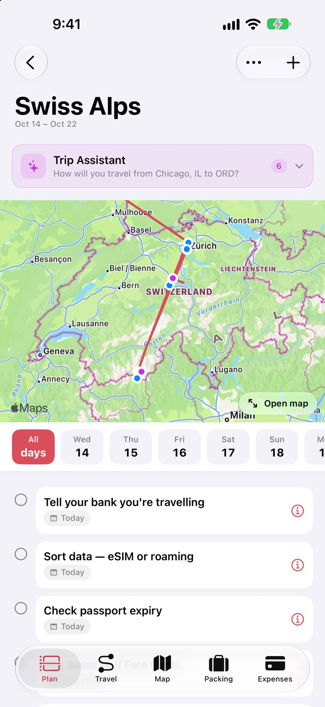
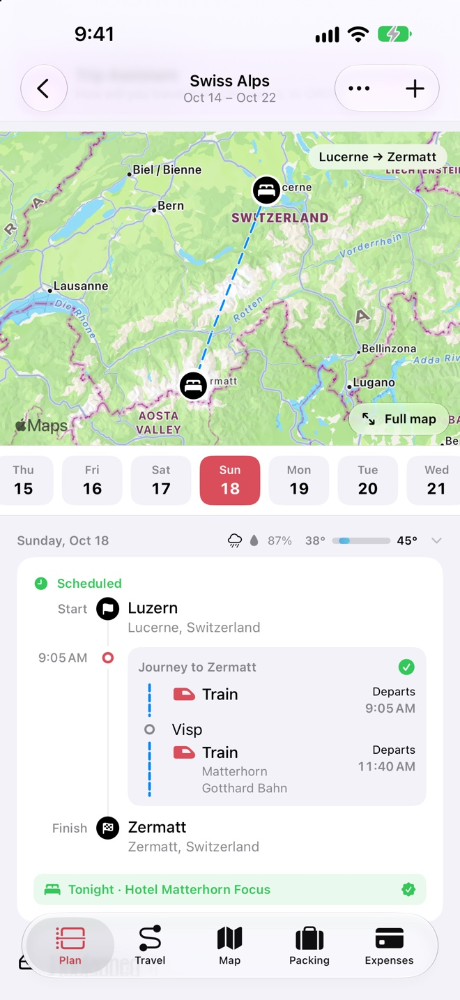
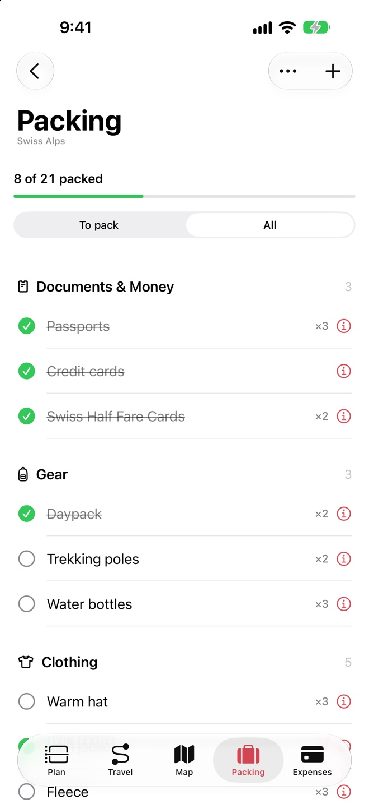
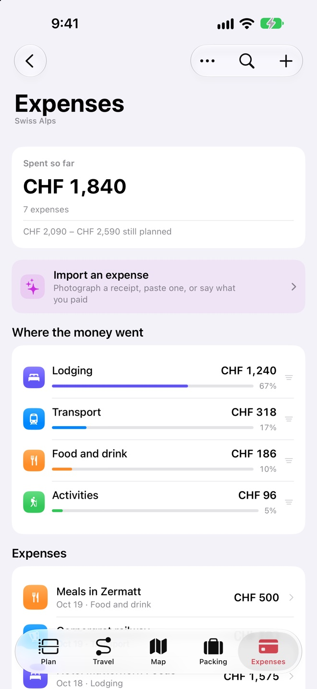

Start with what you have.
Paste a booking, add photos or files, or dictate your plans. Review what Apple Intelligence finds and answer questions before adding it to your trip.
A little more ready for wherever
The booking in your inbox. The café you saved. The plan for tomorrow. Give every part of your trip a place.
Download on theApp StoreMade for iPhone, iPad and Mac.
Take a look around

Paste a booking, add photos or files, or dictate your plans. Review what Apple Intelligence finds and answer questions before adding it to your trip.
Keep stays, journeys and things to do on one timeline. See routes and travel times, check the forecast, and open directions in Apple Maps.
Save places for later, give them a day when you're ready, or adapt a featured itinerary to your own dates. Share a trip with the people coming along.
The details come along, too
Keep the practical parts close to the plan, so there's less to piece together on the way.

Keep a library of what you own. Ask for suggestions, adjust quantities and tick things off as you pack.

Save expenses and receipts, split costs with your travelers and see who owes what.
Your trip belongs to you
No app account, advertising or tracking. Trips stay on your devices and in your own iCloud. Apple Intelligence runs on device by default, with optional Private Cloud Compute after you turn it on.
Read the privacy policyWhere are you headed next?
Apple Intelligence features require a supported device with Apple Intelligence enabled. Private Cloud Compute is optional and requires a supported device running iOS 27, iPadOS 27 or macOS 27 or later. iCloud is required for sync and trip sharing. Manual planning works without Apple Intelligence.
App screenshots show an example Switzerland itinerary.